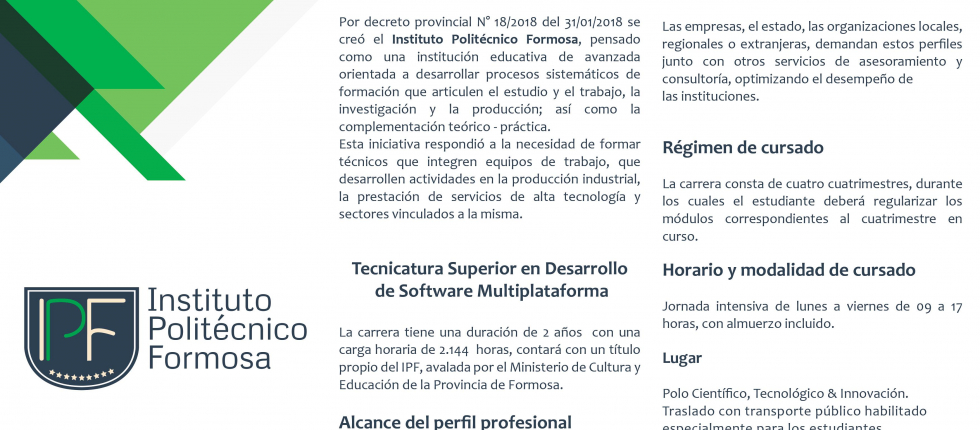
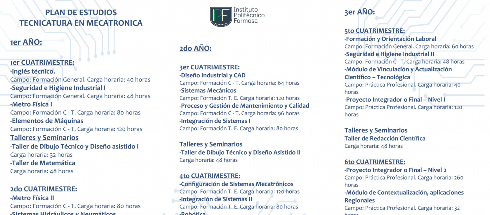

Organismo Descentralizado de la Administración Pública, relacionado con el poder ejecutivo a través del Ministerio de Cultura y Educación de la Provincia de Formosa establecido en el Decreto Nº 18 del 2018.
El Instituto Politécnico Formosa tiene como finalidad las siguientes metas:
Brindar educación superior técnica y tecnológica en áreas ocupacionales específicas, promoviendo capacitaciones estratégicos definidos en el modelo Formoseño
Formar estudiantes orientando su actuación profesional a los diversos sectores del trabajo y producción, con énfasis en el desarrollo socio-económico local, regional y nacional.
Brindar formación profesional continua que posibilite el perfeccionamiento, actualización y/o especialización en áreas específicas, atendiendo las características y necesidades propias de los sujetos que portan distintos tipos de certificados y títulos, su dinámica de innovación tecno-productiva
Fortalecer los procesos de vinculación entre los sectores educativos, científicos y tecnológicos con las necesidades sociales del mundo del trabajo, la producción y el desarrollo local
Orientar su oferta formativa en beneficio de la consolidación y fortalecimiento de lossectores productivos, sociales y culturales locales, con base en las potencialidades de desarrollo socio-económico y cultural
Promover la articulación de la educación secundaria técnico profesional, la educación superior ténico-profesional y la formación profesional, optimizando la infraestructura física, el equipamiento y los equipos formadores
Constituirse como centro de referencia del desarrollo científico tecnológico aplicado al conocimiento, a la producción y en el espacio de vinculación con las instituciones educativas de la provincia, ofreciendo capacitación yactualización científico-tecnológica a los docentes y estudiantes d dichas instituciones.
Realizar y estimular la investigación aplicada, la producción cultural, la iniciativa con asociativismo y el desarrollo científico y tecnológico
Desarrollar programas de extensión y de divulgación científica y tecnológica.
Promover la producción y el desarrollo y la transferencia de conocimientos y de tecnologías especialmente de las destinadas al desarrollo local sustentable y la preservación del ambiente